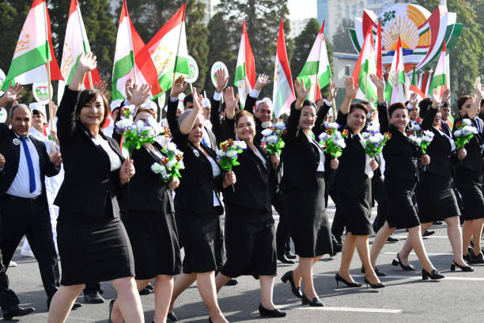
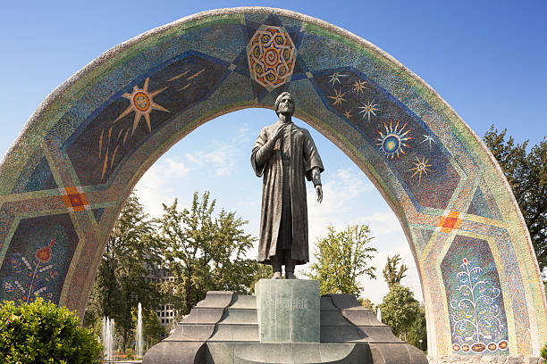
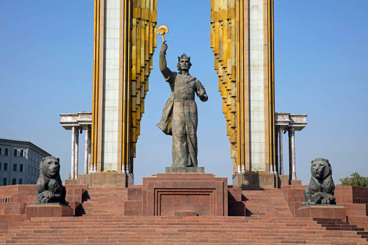
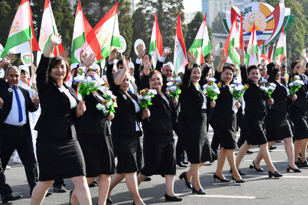
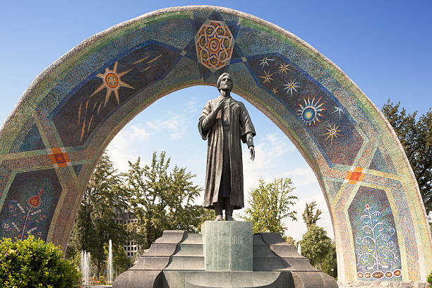
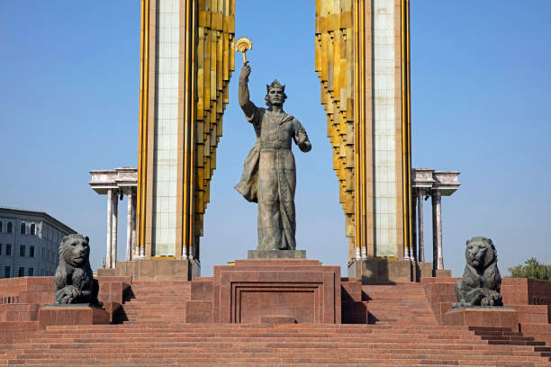

_________________Dushanbe-the capital of Tajikistan________________
Dushanbe[a][b] is the capital and largest city of Tajikistan.
As of January 2022, Dushanbe had a population of 1,201,800 and that population was largely Tajik.
. Until 1929, the city was known in Russian as Dyushambe,[c] and from 1929 to 1961 as Stalinabad,[d] after Joseph Stalin.
Dushanbe is located in the Gissar Valley, bounded by the Gissar Range in the north and east and the Babatag, Aktau, Rangontau and Karatau mountains in the south, and has an elevation of 750–930 m.
The city is divided into four districts, all named after Persian historical figures: Ismail Samani, Avicenna, Ferdowsi, and Shah Mansur.
 




